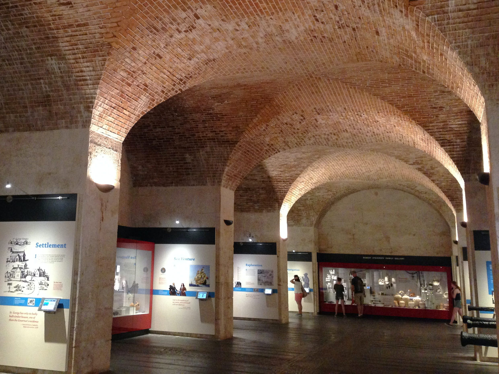

TOURIST DESTINATIONS

NATIONAL MUSEUM OF BERMUDA
Located at the historic Royal Naval Dockyard and commanding Bermuda’s westernmost point, NMB is a non-government, not-for-profit organisation created by the Bermuda National Trust in 1974 as the Bermuda Maritime Museum. The Museum has since expanded beyond its original mandate, which focused on maritime history and the restoration of Bermuda’s largest fort, The Keep.
For nearly 50 years, we have transformed once derelict ramparts, bastions, and historic buildings into a first-class Museum. We have built Bermuda’s largest collection of historic objects, partnered with overseas institutions to carry out archaeological and historical research, and re-imagined our historic military buildings as exhibition and education spaces, research labs, and event venues.
With the support of the Government of Bermuda, we acquired the Casemates complex in 2013, officially becoming the National Museum of Bermuda—growing from a 10- to a 16-acre property. NMB is now the largest attraction in Dockyard and helps to make this area the most visited historical district in Bermuda.